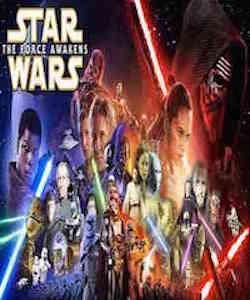
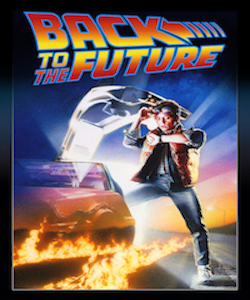
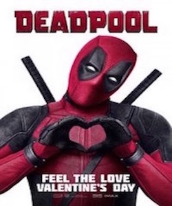
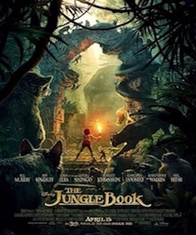

|  |
Synopsis: Star Wars is an American epic space opera franchise, centered on a film series created by George Lucas. It depicts the adventures of various characters "a long time ago in a galaxy far, far away". The franchise began in 1977 with the release of the film Star Wars (subtitled Episode IV: A New Hope in 1981[2][3]), which became a worldwide pop culture phenomenon. It was followed by the successful sequels The Empire Strikes Back (1980) and Return of the Jedi (1983); these three films constitute the original Star Wars trilogy. A prequel trilogy was released between 1999 and 2005, which received mixed reactions. A sequel trilogy began in 2015 with the release of Star Wars: The Force Awakens. All seven films were nominated for Academy Awards (with wins going to the first two films) and have been commercial successes, with a combined box office revenue of $7.471 billion,[4] making Star Wars the third highest-grossing film series.[5] Spin-off films include Star Wars: The Clone Wars (2008) and Rogue One (2016), which is the first in an upcoming series of anthology films. Cast: Hayden Vader, Kylo Ren |
|  |
Synopsis:Back to the Future is a 1985 American science-fiction adventure comedy film[5] directed by Robert Zemeckis and written by Zemeckis and Bob Gale. It stars Michael J. Fox as teenager Marty McFly, who is sent back in time to 1955, where he meets his future parents in high school and accidentally becomes his mother's romantic interest. Christopher Lloyd portrays the eccentric scientist Dr. Emmett "Doc" Brown, Marty's friend who helps him repair the damage to history by helping Marty cause his parents to fall in love. Marty and Doc must also find a way to return Marty to 1985. Zemeckis and Gale wrote the script after Gale mused upon whether he would have befriended his father if they had attended school together. Various film studios rejected the script until the financial success of Zemeckis' Romancing the Stone. Zemeckis approached Steven Spielberg, who agreed to produce the project at Amblin Entertainment, with Universal Pictures as distributor. The first choice for the role of Marty McFly was Michael J. Fox. However, he was busy filming his television series Family Ties and the show's producers would not allow him to star in the film. Cast: Michael J. Fox, Lea Thompson |
|  |
Synopsis:Deadpool is a 2016 American superhero film directed by Tim Miller and written by Rhett Reese and Paul Wernick, based on the Marvel Comics character of the same name. It is the eighth installment in the X-Men film series, and stars Ryan Reynolds as the title character, as well as Morena Baccarin, Ed Skrein, T.J. Miller, Gina Carano, Leslie Uggams, Brianna Hildebrand, and Stefan Kapičić. In the film, antihero Deadpool hunts the man who nearly destroyed his life while also trying to reunite with his lost love. Development began in February 2004 with New Line Cinema, but moved in March 2005 to 20th Century Fox who bought the film rights. In May 2009, after Reynolds portrayed the character in X-Men Origins: Wolverine, to the general disappointment of fans, Fox lent the film to writers, and Miller was hired for his directorial debut in April 2011. Additional casting began in early 2015, and principal photography commenced in Vancouver from March to May. Deadpool premiered in Paris on February 8, 2016, and was released on February 12 in the United States in IMAX, DLP, D-Box, and premium large format. Critics praised Reynolds' performance as well as the film's style, faithful depiction of the titular character, and action sequences, but criticized its plot as formulaic. Cast: Ryan Reynold, Morena Baccarin |
|  |
Synopsis: The_Jungle_Book is an American epic space opera franchise, centered on a film series created by George Lucas. It depicts the adventures of various characters "a long time ago in a galaxy far, far away". The franchise began in 1977 with the release of the film The Jungle Book (subtitled Episode IV: A New Hope in 1981[2][3]), which became a worldwide pop culture phenomenon. It was followed by the successful sequels The Empire Strikes Back (1980) and Return of the Jedi (1983); these three films constitute the original Star Wars trilogy. A prequel trilogy was released between 1999 and 2005, which received mixed reactions. A sequel trilogy began in 2015 with the release of The Jungle Book: The Force Awakens. All seven films were nominated for Academy Awards (with wins going to the first two films) and have been commercial successes, with a combined box office revenue of $7.471 billion,[4] making Star Wars the third highest-grossing film series.[5] Spin-off films include Star Wars: The Clone Wars (2008) and Rogue One (2016), which is the first in an upcoming series of anthology films. Cast: Scarlett Johansson, Beg Kinsley |
|
Synopsis: The_Promise is an American epic space opera franchise, centered on a film series created by George Lucas. It depicts the adventures of various characters "a long time ago in a galaxy far, far away". The franchise began in 1977 with the release of the film The Promise (subtitled Episode IV: A New Hope in 1981[2][3]), which became a worldwide pop culture phenomenon. It was followed by the successful sequels The Empire Strikes Back (1980) and Return of the Jedi (1983); these three films constitute the original Star Wars trilogy. A prequel trilogy was released between 1999 and 2005, which received mixed reactions. A sequel trilogy began in 2015 with the release of The Promise: The Force Awakens. All seven films were nominated for Academy Awards (with wins going to the first two films) and have been commercial successes, with a combined box office revenue of $7.471 billion,[4] making Star Wars the third highest-grossing film series.[5] Spin-off films include Star Wars: The Clone Wars (2008) and Rogue One (2016), which is the first in an upcoming series of anthology films. Cast: Christian Bale, Charlotte Bon |